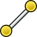

|
| Topic |
|---|
| Drafting |
| Level |
| Beginner |
| Time to complete |
| 20 minutes |
| Author |
| Drei |
| FreeCAD version |
| 0.16 or above |
| Example File(s) |
Introducere
Acest îndrumător este menit să deprindă utilizatorul cu elementele de bază ale unui flux de operaţii bazat pe Panoul Ciornă (Draft), printre care se numără crearea de profile, folosirea planurilor active, crearea dimensiunilor de cotare, textelor şi notelor. Acest îndrumător foloseşte notarea (X, Y, Z) pentru desemnarea coordonatelor necesare pentru definirea diferitelor puncte într-un obiect.

Cerinţe
- FreeCAD versiunea 0.16 sau anterioară
- Cititorul cunoaşte cum se folosesc tab-urile Date şi Vedere pentru a schimba proprietăţile unui element atunci când doreşte acest lucru.
Cum se procedează
Este obligatoriu să vă asigurați că bara de instrumente Ciornă Ancorare (Draft Snap toolbar) va fi disponibilă pentru utilizare pe parcursul operaţiilor din acest îndrumător.
- Porniţi FreeCAD.
- Dacă nu ați deschis un nou document FreeCAD (cea mai mare parte a ferestrei FreeCAD se prezintă ca fiind gri), din meniul derulant, faceți clic pe Fișier, apoi pe Nou sau faceți clic pe instrumentul Creați un document nou
 .
. - Activați panoul Ciornă (Draft );
- Selectați meniul Editare;
- Faceți clic pe Preferințe;
- Mergeți la Ciornă (Draft ) și selectați tab-ul Grilă și ancorare (Grid and snapping);
- Verificați dacă bara de instrumente Arată bara Ciornă Ancorare (Show Draft Snap toolbar) este activă.
Rețineți că puteți modifica vizibilitatea Grilei din acest meniu, în cazul în care doriți să o dezactivați.
Folosirea planelor
Planele sunt folosite pentru a delimita efectul uneltelor din Ciornă la un anumit plan, evitând astfel problemele cu localizarea punctelor și curbelor în piesele complexe. Planele pot să se refere la axele sistemului de coordonate (XY, YZ, ...) sau pot să folosească o suprafață plană din document ca referință.
- Selectați
 Alegeţi planul de lucru. Acesta poate fi localizat în Bara de unelte Panou Ciornă sau în Meniul Ciornă din secţiunea Unelte pentru crearea de ciorne.
Alegeţi planul de lucru. Acesta poate fi localizat în Bara de unelte Panou Ciornă sau în Meniul Ciornă din secţiunea Unelte pentru crearea de ciorne. - Selectați planul XY.
Crearea de profile
Crearea de profile se poate face în mai multe moduri. Deși este posibil să se folosească linii şi arce pentru a trasa cea mai mare parte a figurilor, FreeCAD cuprinde mai multe instrumente pentru accelerarea procesului.
Linii și Arce
- Selectați
 Arc.
Arc. - Setați centrul la (0, 0, 0).
- Setați raza la 30 mm.
- Unghiul de pornire este de 60,0°.
- Deschiderea este de 60,0°.

Repetați procedeul pentru trasarea unui al doilea arc cu o rază de 25 mm. Celelalte proprietăți rămân neschimbate.
Acum vom închide profilul cu nişte linii.
- Selectaţi  Linie.
- Îndreptaţi-vă către capătul oricărui arc. Când cursorul Dvs.
 se va apropia de punctul de terminare, la apropierea de el, punctul va deveni alb.
se va apropia de punctul de terminare, la apropierea de el, punctul va deveni alb. - Selectaţi capătul celuilalt arc şi uniţi.
- Repetaţi operaţia în cealaltă parte a arcelor.
Acum avem mai multe curbe care descriu un profil, însă acesta nu este recunoscut ca o entitate de sine stătătoare. Se poate continua lucrul cu elementele nemodificate, totuşi în acest caz vom prefera să le unim într-un singur obiect.
Următoarele acțiuni vor schimba felul în care se comportă obiectele şi vor îngreuna editarea proprietăților, așadar se recomandă să faceți toate modificările necesare înainte de a trece mai departe.
- Selectaţi un arc şi o linie în timp ce apăsaţi tasta CTRL
- Daţi clic pe
 Actualizare
Actualizare

Aceasta va uni ambele obiecte într-un Cablu. Repetaţi până când toate cele patru elemente sunt unite într-un singur Cablu.
Plane, dreptunghiuri şi cercuri
- Daţi clic pe
 Dreptunghi
Dreptunghi - Setaţi coordonatele primului punct la (-100, -60, 0)
- Setaţi coordonatele celui de-al doilea punct la (140, 90, 0)

Rezultatul este un Plan. Aspectul lui pot fi modificat prin clic dreapta: dacă doriţi înlăturarea suprafeţei de umplere, schimbaţi Stil de desenare în Cadru cu linii (Wireframe).
- Selectaţi

- Setaţi coordonatele centrului la (0, 0, 0)
- Setaţi raza ca 15 mm

Polygons
- Selectaţi
 Poligon
Poligon - Punctul central este localizat la (0, 0, 0).
- Setaţi raza la 50 mm.
- Selectaţi ca număr de laturi 6.

Matrici (tablouri)
Matricile sunt folosite pentru a replica un obiect de mai multe ori pe o direcție, după o axă de rotație sau de-a lungul unei căi.
- Selectaţi Cablul creat anterior
- Daţi clic pe
 Matrici
Matrici - În tab-ul Date al objectului, schimbaţi tipul matricii din orto în polar
- Schimbaţi Numărul polar din 1 în 3
Adăugaţi dimensiunile de cotare
Dimensiunile de cotare necesită o utilizare constantă a ancorării constrângerilor pentru a selecta corect punctele pe care doriți să le folosiţi la dimensionare. Pentru a schimba selectarea punctelor posibile, se va utiliza bara de instrumente Ancorare.
- Select
 Dimension
Dimension - Select the first point. This can be either an existing element or specified by coordintes. For this tutorial, the first point will alwaysvbe (0, 0, 0)
- Select the second point. Approach the midpoint of the top line of the polygon. A white point should appear alongside this icon

- Move the cursor to the desired location of the dimension and click on it.
- Change the font size on the View tab to 6 mm

Repeat the process for the arcs and circles.
Adnotări şi text
Între cele două, există doar o diferență de nuanţă : textul oferă un profil ce poate fi utilizat pentru a efectua modelări 3D.
Annotations
- Selectaţi
 Text
Text - Selectaţi punctul de referinţă în Vedere 3D. In acest caz, este punctul de mijloc al arcului de sus.
- Introduceţi textul şi apăsaţi tasta Enter. Repetaţi pentru fiecare linie de text pe care doriţi s-o introduceţi.
- Ca să terminaţi, apăsaţi tasta Enter de două ori.

{kind=link}
Text
- Selectaţi
 ShapeString
ShapeString - Selectaţi punctul de referinţă în Vederea 3D View. Acesta poate fi un punct existent sau dat de poziţia curentă a cursorului.
- Introduceţi textul şi apăsaţi tasta Enter.
- Setaţi mărimea literelor.
- Păstraţi urma (tracking) de 0 mm
- Selectaţi calea de acces către fişierul tipului de font pe care doriţi să-l folosiţi (dacă lăsaţi gol, se va folosi fontul implicit)
Crearea planşelor
Pentru a realiza planşe, este necesară crearea unei pagini Desenare cu elementele pe care doriţi să le folosiţi. Vă rugăm să citiţi Îndrumător pentru Desenare pentru o descriere detaliată.
Aici se termină şirul de operaţii elementare ce pot fi realizate cu panoul Ciornă (Draft).
Lecturi recomandate
- Pentru o descriere detaliată a panoului, vă rugăm să consultați Panoul Ciornă
- Pentru a afla mai multe despre comanda Ancorare, vezi Ciornă Ancorare